Al caminar por la cordillera y observar acumulaciones de rocas, estaremos ante la presencia de un mensaje prehispánico que fue sagrado y continua siéndolo hasta nuestros díasPor Christian Vitry, Montañista y Antropólogo Restauración Fotográfica: Centro Cultural Argentino de Montaña, Natalia Fernández Juárez |
Fotos: Christian Vitry
Los caminates que tuvieron la posibilidad de transitar por la cordillera, seguramente observaron montículos de rocas o pequeñas columnas en determinados lugares. El objetivo de este artículo escrito hace algunos años es poder aportar a la identificación de estos elementos que nos acompañan en las montañas y saber que, detrás de esas rocas acumuladas, hay historias riquísimas que valen la pena conocer.
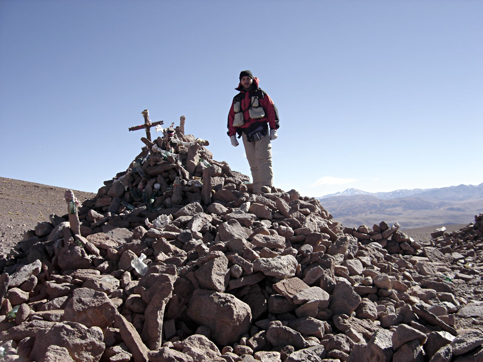
Apacheta en el Abra de Acay
En toda la extensión del Tahuantinsuyu fueron identificados por los investigadores numerosos santuarios, lugares u objetos sagrados que constituían las unidades básicas para la organización social y espacial-territorial; los mismos son de carácter natural, como cuevas, rocas, manantiales y montañas; o bien artificial, como casas, canales u otra construcción humana como apachetas y mojones. (Bauer, 1992:17).
Pachacuti Yamqui (1613) opinaba que la apacheta era una invención de los Incas, lo que parcialmente fue contrastado con evidencias arqueológicas por John Hyslop, quien encontró estos montículos en toda la extensión de Tahuantinsuyu (Hyslop, 1992). Se puede inferir que la localización de apachetas responden a ciertos patrones asociados a los caminos incaicos, por lo que resulta factible su reconocimiento y ubicación espacial. No obstante, existen otros rasgos similares a las apachetas -los mojones- con los que se las suele confundir.
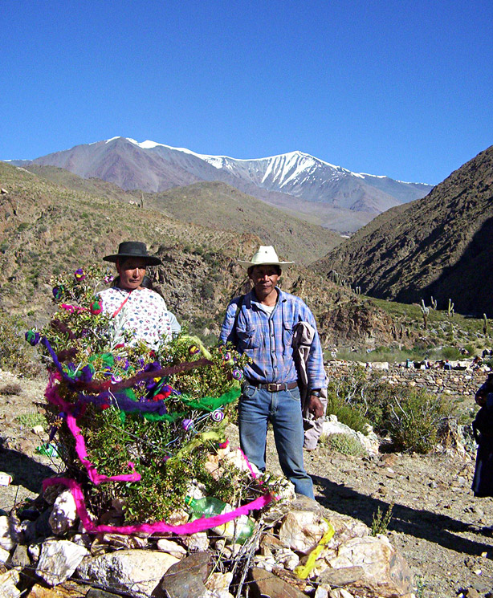
Apacheta y Nevados de Palermo, Familia Bonifacio. La Poma, Río Salado. Foto: Fernanda Sola
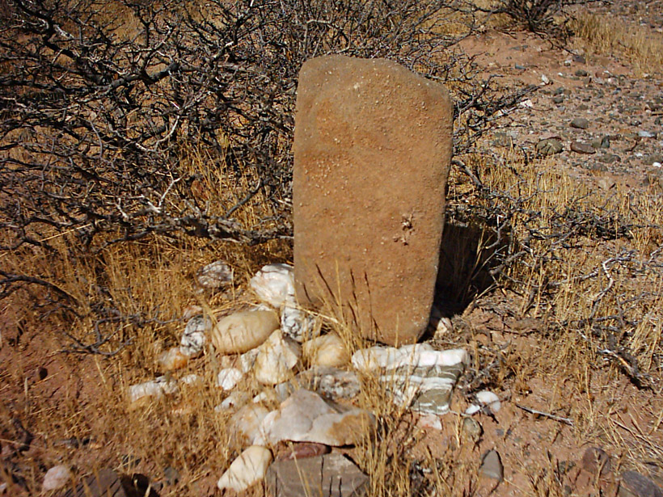
Sayhua en Rancagua, Valle Calchaqui. Foto: Antonio Mercado
Apachetas y otros objetos de roca destinados al culto
Fueron los cronistas de la conquista y colonia, especialmente los extirpadores de idolatrías, quienes se refirieron a las apachetas, a través de ellos veremos las primeras definiciones:
González Holguín: “montones de piedras adoratorios de caminantes” (1608:30)
Bertonio: “montón de piedras, que por superstición van haciendo caminantes, y los adoran”. (1612:23)
Polo de Ondegardo: “...en el Cuzco y en los Collas se llaman apachitas, y en otras partes las llaman cotorayac rumi o por otros vocablos” (1567: 189-190). A esto podemos agregar la definición del diccionario de Holguin que dice: Ccotto: montón. Ccottoni: amontonar.
Cristóbal de Molina: “llamaban a esta chupasitas” (1575: 96)
Inca Garcilazo de la Vega: “quiere decir demos gracias y ofrezcamos algo al que hace llevar estas cargas, dándonos fuerza y vigor para subir por cuestas tan ásperas como esta, y nunca lo decían sino cuando estaban en los alto de la cuesta, y por eso dicen los historiadores españoles que llaman Apachitas a las cumbres de las cuestas, entendiendo que hablaban con ellas” (1609:81)
Las apachetas son montículos artificiales formados por la acumulación intencional de rocas de diferentes tamaños que puedan ser transportadas por los hombres; su forma es más o menos cónica y se encuentran ubicadas a los costados de las sendas y caminos de la cordillera, especialmente en las abras, portezuelos, partes altas de una cuesta y escasamente en lugares llanos.
Los tamaños de las apachetas son muy diversos, ya que van desde pequeños montículos de escasos centímetros de altura con respecto al suelo, hasta enormes volúmenes rocosos cuya base puede llegar a tener un diámetro aproximado de 10 metros y una altura de tres metros; tal es el caso de la apacheta del abra del Acay, una de las más grandes conocidas en los Andes. Poseen una base amplia debido a los permanentes derrumbes y a que no es costumbre reconstruirlas.
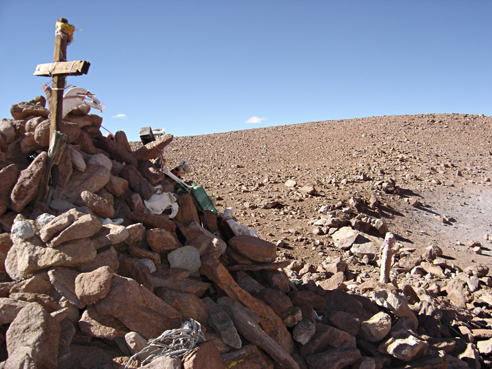
Apacheta en el Abra de Acay
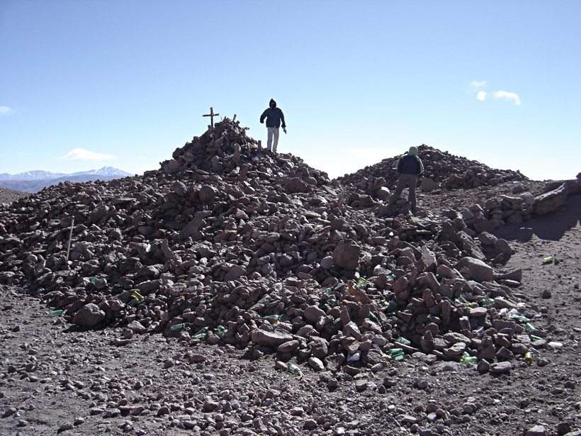
Apacheta en el Abra de Acay
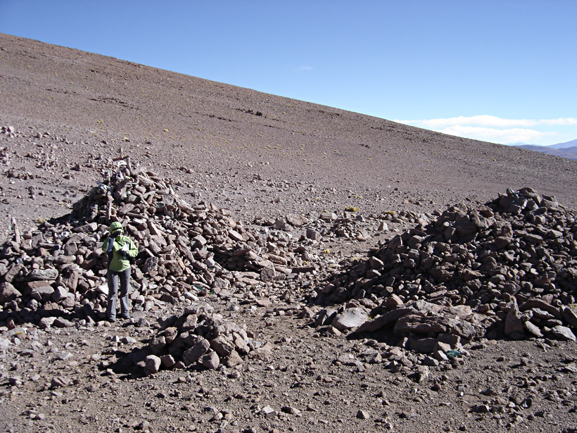
Apacheta en el Abra de Acay
No existen muchos estudios científicos realizados sobre las apachetas y muchas veces se las confunde con los mojones, que son similares pero guardan importantes diferencias morfológicas y funcionales, siendo éstos más comunes y numerosos que las apachetas.
Las apachetas son objetos dinámicos en tanto crecen por el aporte de rocas de los caminantes y su tamaño está directamente relacionado con la transitabilidad de la comarca.
Por lo general están formadas por rocas de colores claros provenientes de otros lugares, las que son transportadas por los viajeros con la finalidad de ser depositadas en esos espacios de altura consagrados al culto. Entre las rocas se pueden observar algunas ofrendas modernas como botellas de vidrio, latas de conservas, acullicos de coca, colillas de cigarrillos y huesos de animales. Existen además objetos arqueológicos pertenecientes a las culturas precolombinas, tales como restos de cerámica, lascas e instrumentos líticos entre los más comunes.
Los espacios donde se emplazaron las apachetas, fueron y son considerados sagrados. Lugares construidos y espacios organizados por determinados grupos sociales, quienes los dotaron de significación y, a través de los ritos, renuevan permanentemente su vigencia en el tiempo y confirman su necesidad social. El análisis del lugar donde se construye la apacheta tiene sentido porque fue cargado de sentido, porque en él se identifican los individuos y se relacionan, compartiendo una historia en común.
Al estar demarcando cambios espaciales, se desprende con cierta claridad los principios de percepción cultural relacionados a límites transicionales (punqu) como así también a la noción de encuentro (tinqu), por ello, en estos lugares es donde se realizan peticiones y se entregan ofrendas a estos marcadores espaciales que indican el término de un espacio y el inicio de otro. Las peticiones que se realizan en las apachetas están muy relacionadas con el viajero y obviamente con las sendas y el camino, ya que las mismas se relacionan con el descanso, las fuerzas para continuar, la protección, la salud y el permiso para ingresar a un lugar nuevo. (Galdames Rosas. 1990: 21).
Respecto a la elección del lugar de ubicación de las apachetas, el investigador Mostajo opina que: "...las apachetas no señalan los puntos más altos, sino los lugares desde los cuales uno descubría un nuevo horizonte o un accidente capital de la naturaleza". (citado en Hyslop 1992: 204).
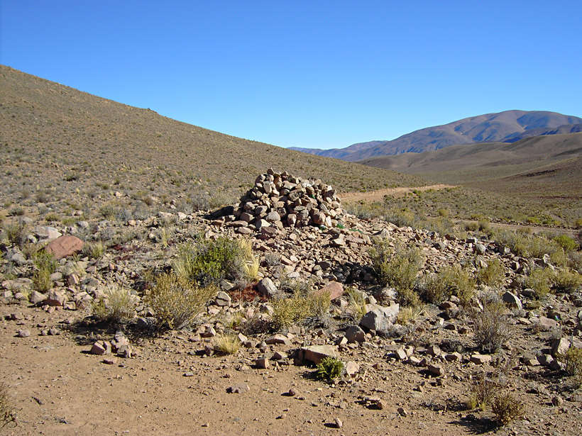
Apacheta en el Abra, Salta
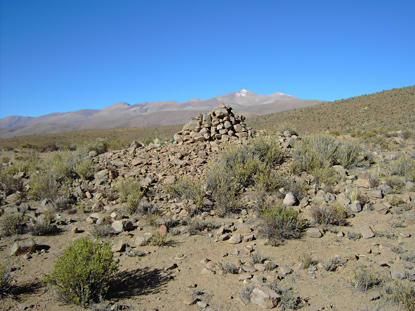
Apacheta en el Abra. El Palomar al fondo el Nevado de Chañi
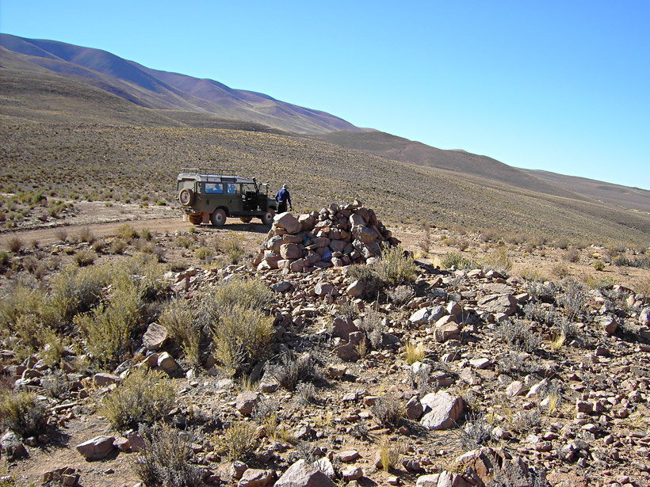
Abra en el Palomar entre Salta y Jujuy
La Lic. María Cristina Bianchetti con relación al origen de las apachetas opina que el mismo se encuentra en los "osnos" o altares de sacrificios; "Al respecto dice Santa Cruz Pachacuti que Sinchi Ruca Inca. 2da. Inca, al hacer la conquista de los territorios enviaba a sus capitanes e indios con la orden de construir en las quebradas 'Usnus' que 'son unas piedras puestas como estrado'. Se le dio el nombre de 'apachita' 'y los puso un rito que cada pasajero pasase con piedras grandes para dejar para el dicho efecto necesario ya declarado' ...Y que 'todos los soldados los echasen las cochachos [bolos de coca o acullico], cocas mascados al cerro por donde pasaron'. La creencia general era que 'los apachitas (...) respondía 'Norabuena' ...', permitiéndoles continuar el camino sin dificultades.". (Bianchetti, 1993:14).
Pachacuti Yamqui (1613) opinaba que la apacheta era una invención de los incas; apoyando esta opinión el arqueólogo John Hyslop (1992) comenta al respecto que "...su distribución es a grandes rasgos similar a la del territorio mismo del Tawantinsuyu, y su construcción puede haberse difundido con el crecimiento del sistema vial inkaico".
Es sabido que los incas se preocuparon en dividir, amojonar y marcar de alguna manera el espacio geográfico, no obstante, no existen suficientes pruebas arqueológicas ni documentales como para afirmar que las apachetas surgieron y se distribuyeron con los Incas.
Por lo antedicho se puede inferir que la localización de apachetas responde a ciertos patrones, por lo que resulta factible su reconocimiento y ubicación espacial. Por otra parte queda clara la función religiosa y ritual de estos montículos y su relación con las sendas y caminos. Por último, las características constructivas, la selección deliberada de rocas, los objetos depositados como ofrendas (actuales y arqueológicos) y el "dinamismo" o "crecimiento" directamente proporcional a la transitabilidad de personas por el lugar, hacen de la apacheta un objeto inconfundible.
Aparte de las apachetas existen otros objetos de rocas o rasgos relacionados con el culto que funcionan como marcadores espaciales cargados de significación. Por su relación con lo sagrado es que los incluimos en la misma categoría que las apachetas, pudiéndose modificar la lista a la luz de nuevas investigaciones:
Muchaderos: Los muchaderos o mochaderos son frecuentemente mencionados por los cronistas de los siglos XVI y XVII, también por algunos estudios etnográficos contemporáneos. En el tratado más temprano de Polo de Ondegardo (1585) podemos ver una referencia a los santuarios de los alrededores del Cuzco donde incluye a los muchaderos:
“Y como el Cuzco y su comarca tenía gran suma de Idolos, huacas, villcas adoratorios o mochaderos constituidos en diferentes partes, assí también tenían en cada prouincia particulares huacas y adoratorios, y cada vna otra cosa más particular que adoraua, y cada familia, cuerpos de difuntos que venerar. Finalmente cada tierra y prouincia tenía mucha diuersidad de mochaderos, y si agora se an desecho los Idolos, piedras, é instrumentos de sacrificios y otras cosas muchas que tenían para sus ritos, con todo están en pie los cerros, collados, fuentes, manantiales, ríos, lagunas, mar, angosturas, peñas, Apachetas, y otras cosas assí: cuya veneración aún dura todavía y es necesario que alla mucha vigilancia para desterrar de sus coraçones esta impía veneración.” (Polo de Ondegardo 1916:43 [1585]).
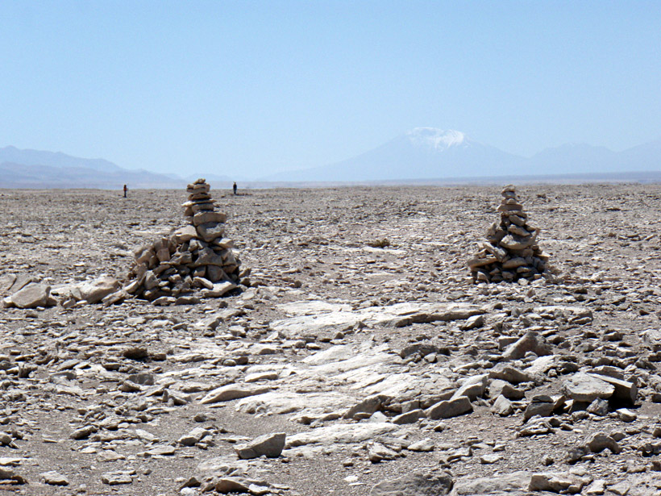
Mojones a ambos lados del camino inca en el norte de Chile
Según el diccionario de González Holguín “Muchhani” significa adorar, rogar, venerar o besar las manos. Muchhaicuni: agradecer.
No queda clara la característica física distinguible de los muchaderos, podemos hipotetizar que se trata de las grandes rocas que fueron (y en algunas partes todavía lo son) adoradas, conocidas también como Tokankas.
Tokankas: Eran grandes piedras o rocas escarpadas, situadas también sobre la ceja de los cerros, y al pie de las cuales los indios cargueros descansaban y escupían sobre ellas su akul-iku (bola de coca mascada) o un poco de maíz mascado.
Según el diccionario de González Holguín “Ttocay” significa saliva. Ttocani: escupir o abominar o enfadarse.
Rumi Turu : Se trata de construcciones ubicadas en la base o piedemonte de grandes cerros, para adoración a las montañas. Poseen una base generalmente rectangular de roca (rumi) que forma una especie de mesada, sobre la cual se levantan paredes de barro (turu) con una abertura donde se depositan las ofrendas y posteriormente se queman. Pueden construirse para una determinada ocasión ritual o estar ubicadas siempre en un lugar determinado.
Existe en el Perú un santuario o huaca que es objeto de culto en la actualidad que se llama Tororumi. (Sánchez Garrafa, 1999).
Mamasaras: Piedras labradas y perfectamente pulimentadas, que se colocaban en el medio de las sementeras para que tuvieran agua oportuna y abundante, atribuyéndoseles virtud especial para producir la lluvia. (J. Toscano. 1898:73/74). Observamos una posible mamasara en el centro de un campo de cultivo en el pueblo de La Poma (Salta, Argentina).
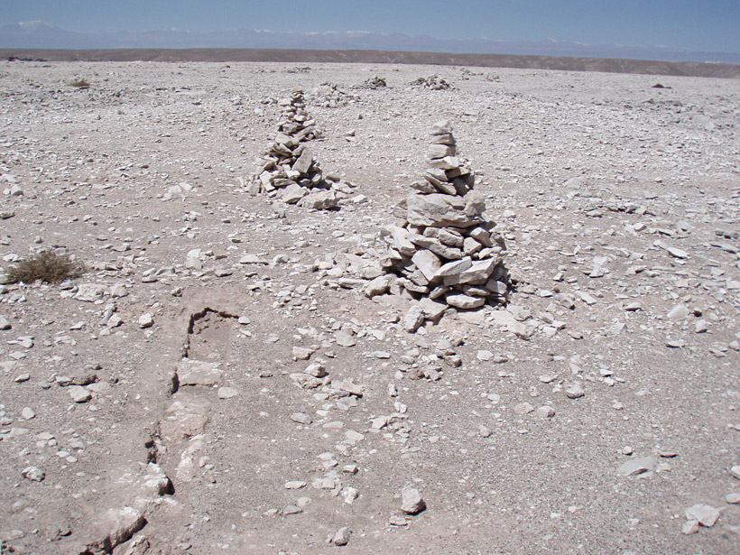
Mojones a ambos lados del camino inca en el norte de Chile
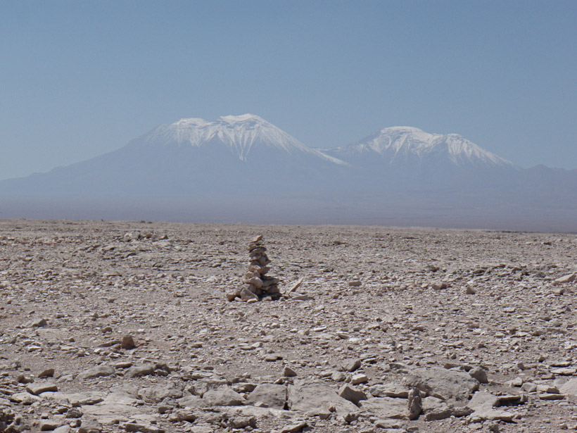
Mojón en el desierto chileno, al fondo los Nevados de San Pedro y San Pablo
Guazas: Piedras largas, colocadas también en los mismos sembradíos, a la puerta de la entrada “... debían estar un poco inclinadas, y eran consideradas como el señor protector que tomaba a su cargo el aumento de la cosecha”. (J. Toscano. 1898:73/74)
Chutacha: “Montoncitos de terrones. En vísperas de las fiestas de Pentecostés, las mujeres colocan en el borde de las chacras o sobre los muros de las casas, con el fin de “encerrar” al espíritu del producto agrícola y evitar que este se aleje del lugar”. (Galdamés Rosas, 1990:14).
Bichaderos: amontonamientos de piedras (Uruguay). (Galdamés Rosas, 1990).
Animitas: Pequeñas capillitas realizadas con piedras planas dejando una abertura donde se depositan las ofrendas o encienden velas, se encuentran “…donde hay un muerto o donde se murió alguien, aparentemente se trata de un fenómeno moderno con raíces antiguas”. (Galdamés Rosas, 1990).
“Trampas de zorros”: Nuestras investigaciones realizadas en cumbres y zonas pedemontanas pusieron en evidencia estructuras arqueológicas cuya morfología corresponde a las “trampas de zorros” de rocas utilizadas antiguamente por los moradores locales. La diferencia con las actuales es su ubicación, por ejemplo, en la cima del cerro Bayo a 4.700 metros.
También las hallamos alejadas del camino arqueológico y poblaciones contemporáneas y arqueológicas. Algunas de estas estructuras se encontraron asociadas a cerámica arqueológica (Inca y otras indeterminadas). Un colega sugirió la posibilidad de interpretarlas como trampas para la caza ritual del zorro, animal considerado sagrado por muchas culturas andinas. (Carlos Aschero, comunicación personal, 1997).
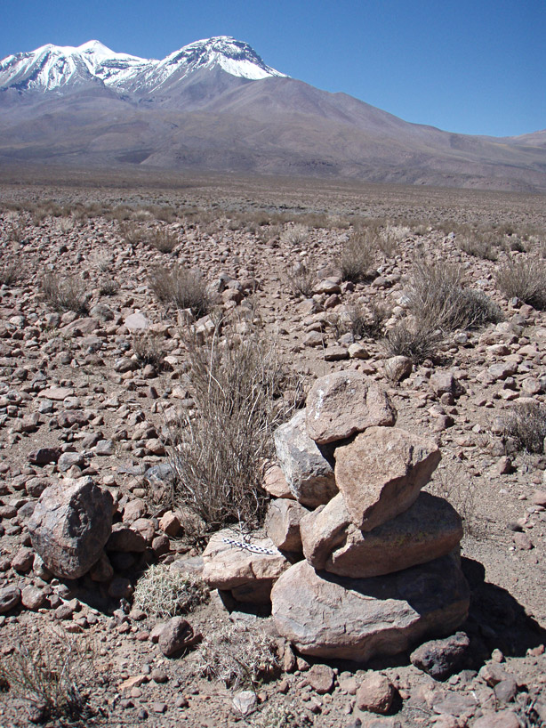
Mojón junto al camino inca en el norte chileno, al fondo el Volcán Paniri
Mojones y otros marcadores espaciales del paisaje
A diferencia de las apachetas, los mojones, están formados por rocas superpuestas en diferentes formas según el tipo, conformando una estructura alargada y vertical, como pequeñas torres.
Suponemos hipotéticamente que los mojones no poseen un sentido sacro, pues los considerados hitos o marcadores espaciales que tienen la finalidad funcional básica de demarcar el territorio.
Nuestras investigaciones bibliográficas y de campo nos indican la existencia de por lo menos cinco variedades de mojones a saber:
Sayhuas: Poseen una variada morfología, desde una roca vertical alargada apuntalada con rocas de menor tamaño a torres o columnas de casi dos metros de altura formadas por numerosas hiladas de rocas superpuestas. Se emplazan preferentemente en lugares visibles, como lomas, filos y cumbres pequeñas. Se utilizan en la actualidad en muchas partes de los andes y las comunidades las reconocen para distinguir el territorio de las diferentes parcialidades. Por ejemplo en Perú, en la cordillera de Vilcanota (cerca de Cuzco) reconocimos una serie de sayhuas que marcaban el territorio de las comunidades de Ausangaste y Pakchanta.
Según el diccionario quechua de González Holguín el término significa mojón de tierras.
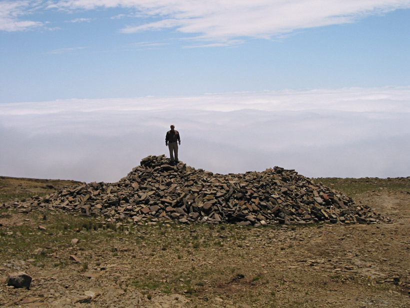
Apacheta en la Cuesta de Sama Tarija, Bolivia. Foto: Lilo Methfessel
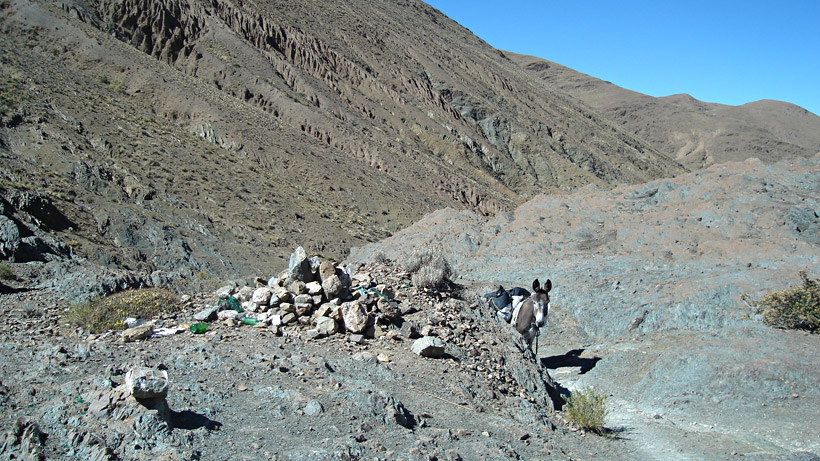
Apacheta en Corral Blanco con ofrendas. Quebrada de Potrero en Valle Calchaqui
Mojones en caminos: Se trata de pequeñas torres u objetos formados por el amontonamiento intencional de rocas y se ubican a los costados de los caminos. Su tamaño por lo general no supera los 0,50 m. La finalidad de estos mojones aparentemente es la de demarcar el camino. Se pudo comprobar en la cordillera que, ante una nevada los mojones sobresalen indicando perfectamente el rumbo de la senda. En caminos arqueológicos hallamos las siguientes regularidades:
- mojones ubicados en ambos lados del camino (paralelos o alternados) cuando éste es recto;
- mojones ubicados en las inflexiones o curvas; y
- mojones ubicados en las laderas cuando se presenta un cambio de pendiente significativo.
Mojones en puestos de OBSERVACIÓN: Se trata de rasgos u objetos de forma cónica truncada ubicados en la cima de lomadas y asociados a estructuras de planta circular. En la serranía del Chañi observamos este tipo de mojones asociados al camino incaico y lo clasificamos oportunamente según su relación directa o indirecta respecto al camino incaico. (Vitry, 2000b).
Mojones en cumbres de cerros: Ubicados en las cimas o laderas de altas montañas. Su tamaño varía desde pocos centímetros a casi dos metros de altura.
Pilares o columnas astronómicas: Se trata de torres situadas en la cima de lomas, en abras o filos de cerros. Se observaron los cimientos y partes de estas torres en las serranías próximas al Cuzco, desde donde se las observaba y según los cronistas servían para fines astronómicos. (Bauer y Dearborn, 1995).
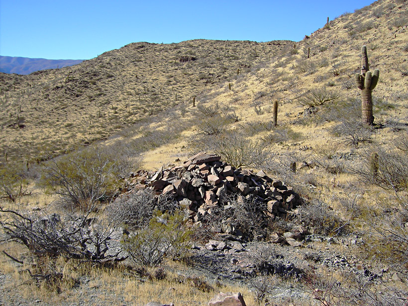
Apacheta en Abra de Guanaquitos en Valle Calchaqui
Comentario final
En el presente trabajo hemos intentado clasificar y/o estudiar sistemáticamente algunos marcadores espaciales del paisaje prehispánico, tratando de compenetrarnos con el conocimiento práctico del entorno, las cualidades físicas del mismo, las diferencias morfológicas y funcionales de dichos marcadores espaciales prehispánicos, como también sus significaciones.
Gracias a la información proporcionada por algunas crónicas históricas y a la perduración de prácticas espaciales-culturales a través del tiempo, hemos logrado una aproximación a la comprensión de la construcción social del espacio-territorio prehispánico.
Poder diferenciar las apachetas de los otros rasgos con los que se las solían confundir es importante, ya que es un punto de partida para la discriminación entre el significante espacial y el significado cultural, que nos permite comprender al espacio como producto de la sociedad que lo concibe, ya que el espacio es sobre todo una categoría cultural.
Al decir que el espacio geográfico es una construcción social, estamos hablando de un entramado muy complejo relacionado con la historia, los mitos, las relaciones de poder, la estratificación social, la geomorfología, la religión, la economía, el clima, las relaciones de parentesco, la geología, etc., y, por supuesto, con la identidad.
Las sociedades construyen su espacio material a la vez que lo representan y lo nombran, transformando la naturaleza tanto en su materialidad como en su dimensión semántica. Esta espacialidad de la sociedad pone en evidencia aspectos culturales que intentamos decodificar a través de la Arqueología. Al caminar por la cordillera y observar acumulaciones de rocas, estaremos ante la presencia de un mensaje que perduró en el tiempo. Apachetas y mojones se integran a los paisajes y ciertamente los definen.
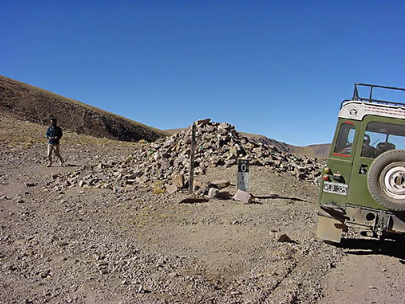
Abra de Lizoite, camino a Santa Vicotria Oeste, Salta
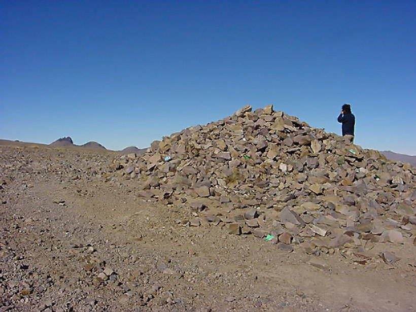
Abra de Lizoite, camino a Santa Vicotria Oeste, Salta
Área Restauración Fotográfica del CCAM: Natalia Fernández Juárez
Notas Relacionadas
-


Guías de Montañas Argentinas: Volcán Quewar, Provincia de Salta -

Exploradores suecos, pioneros de la arqueología de alta montaña
en la Puna -

Guía de Montañas Argentinas:
El Nevado de Cachi -

Primer ascenso de siete deportistas trasplantados al Nevado de Acay, Provincia de Salta -

La leyenda del misterioso
tesoro del Acay -

Ascendiendo la Cumbre
Sagrada del Apu Quewar,
Provincia de Salta
Es nuestra misión dar a conocer la Cultura de Montaña Argentina y por lo tanto es prioritario que si es utilizado nuestro material visual, acuerden con la institución su uso. Si están interesados en el material fotográfico del CCAM, le sugerimos que se contacten a: info@culturademontania.org.ar
Todo el material fotográfico del CCAM es restaurado y publicado en alta resolución.